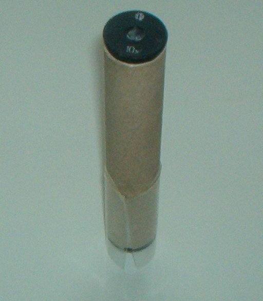
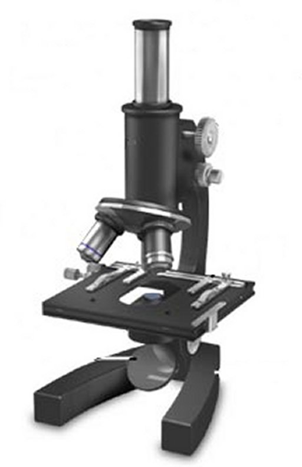
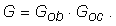

Microscopul
Uneori suntem interesaţi să observăm detalii foarte fine, iar o lupă nu este îndeajuns! Folosim atunci un microscop.
 Activitatea experimentală 1
Activitatea experimentală 1
Construieşte un microscop! Lucrează în echipă.
Pasul 1. Folosiţi două lentile cu distanţe focale de 2...3 cm (de exemplu, lentilele detaşabile de la două oculare).
Fixaţi lentilele la capetele unui tub de carton, lung de 10...15 cm. Microscopul este gata!
Pasul 2. Priveşte prin acest microscop suprafaţa ecranului unui monitor sau televizor în funcţiune.
Observă zonele roşii, verzi şi albastre care alcătuiesc oricare imagine.
Pasul 3. Priveşte prin microscop suprafaţa unei foi tipărite. Cineva din echipă să măsoare la ce distanţă de foaie trebuie ţinut obiectivul
microscopului pentru a obţine o imagine clară.
Pasul 4. Decupează o fâşie dreptunghiulară din peretele unei butelii transparente de plastic.
Realizează, folosind această fâşie, un tub transparent şi fixează−l pe tubul microscopului cu bandă adezivă (figura 1).

Fig. 1.
Microscopul în poziţia de utilizare.
Tubul transparent permite iluminarea zonei vizate de obiectivul microscopului, dar îl menţine pe acesta la distanţa optimă de zona vizată.
Activitatea experimentală 2
Estimează grosismentul microscopului pe care l−ai realizat.
Pasul 1. Vizează prin microscop diviziunile unei rigle. Încearcă să priveşti cu celălalt ochi diviziunile riglei.
Pasul 2. Estimează câte diviziuni corespund zonei în care, prin microscop, vezi două diviziuni alăturate. Acest număr corespunde aproximativ
grosismentului microscopului.
Poţi face şi o corecţie, ţinând cont că tubul microscopului este mai mic decât distanţa de vedere clară.
Ai observat cât de importantă este iluminarea obiectului vizat şi cât de fin trebuie reglată distanţa dintre obiectiv şi obiectul vizat!
Un microscop "adevărat" permite iluminarea adecvată a obiectului şi reglarea foarte fină a distanţei obiectiv−obiect (figura 2).

Fig. 2.
Microscop realizat industrial.
Activitatea experimentală 3
Utilizează un microscop de laborator şi observă detaliile suprafeţelor obiectelor care te interesează!
Imaginea dată de un microscop de laborator este net superioară celei obţinute cu microscopul realizat de tine, dar principiul de realizare este acelaşi!
Pe obiectivele şi ocularele unui microscop sunt marcate grosismentele acestora. De exemplu, un ocular cu grosismentul 10 este marcat 10x.
Poţi calcula uşor grosismentul unui microscop − înmulţeşti grosismentele obiectivului şi ocularului:

 Provocarea 1
Provocarea 1
Cât este grosismentul microscopului de laborator pe care l−ai utilizat în activitatea experimentală 3?